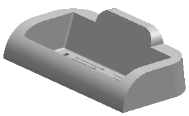

检查您的设置
-
在 NX 中，选择文件→打开。
-
浏览至您的 cardholder 文件夹并打开 cardholder_validate。 
-
选择开始→所有应用模块→注塑模向导。
-
要验证是否已安装注塑模向导，点击资源条上的重用库 。
如果已安装 MW 库，将在库列表中显示它，如果没有，请联系您的系统管理员，并在进行后面的加载标准件之前安装库。
-
选择首选项→建模。
-
在常规选项卡中显示新几何体的属性的下方，确保布尔运算面属性来自是设置为工具体，然后点击确定。
这个选项将为这个练习中的分型部分提供更好的颜色对比。
-
选择首选项→可视化在着重选项卡→部件设置组中， 将线框对象取消着重下方的混合颜色设置为白色，并将混合百分比设为70。
-
在会话设置组中着重优先顺序的下方，选中通透显示预览以及工作部件复选框。
这些首选项将使装配工作部件更便于观看。
-
在选项组中，清除通透显示已取消着重表示的对象复选框。
-
点击资源条上的角色
 选项卡，选择具有完整菜单的高级功能角色。
选项卡，选择具有完整菜单的高级功能角色。